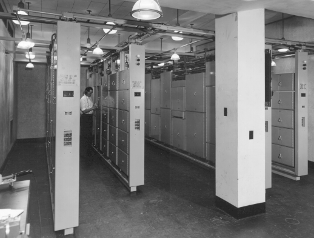
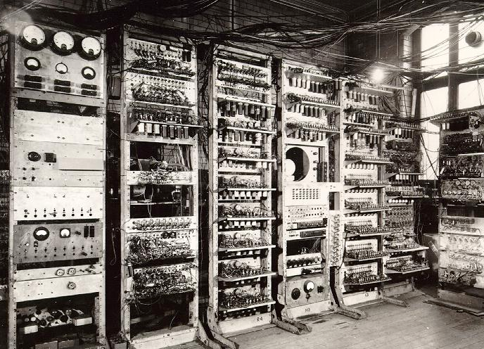
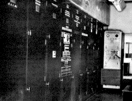

| Máquinas | Criador | Características das Máquinas | Imagem da máquina |
|---|---|---|---|
| Computador Bell | Bell Telephone Laboratories | Velocidade de processamento é muito maior que as mecânicas, se diferenciando dos anteriores pela possibilidade de ser executado continuamente e uma baixa necessidade de manutenção e poucos erros de cálculo. |  |
| ENIAC | Eletronic Numerical Integrator and Calculator | Esse computador é composto por diversas válvulas, sendo cerca de 18.000 válvulas, 70.000 resistores e 10.000 capacitores. Desta forma, consumia uma quantidade de energia alta(150 Kwatts) e um grande espaço. Obs: sua arquitetura aumentou a velocidade em 1000 vezes. |

|
| Mark I | Segunda Guerra Mundial (Manchester) | Foi baseado em relés(um tipo de circuito eletrônico), se caracterizando pela primeira máquina capaz de fazeruma sequência de operações aritméticas a partir de um conjunto de instruções, composto por uma memória RAM de 32 bits ou seja 32 palavras, ou seja 1024. |  |
| EDVAC | Von Neuman | Foi introduzido o conceito de armazenamento, e Von Neuman introduziu um novo conceito, utlizando cartões perfurados para introduzir os programas, da mesma forma que eram feito a introdução dos dados. |  |
| Foi inserido também os primeiros periféricos, como as unidades de fita magnética, impressos entre outros. |